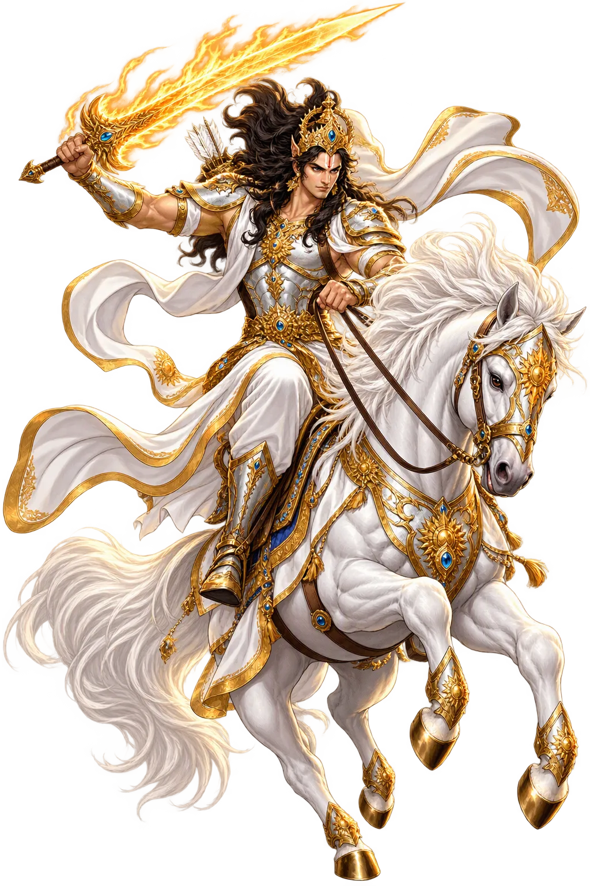
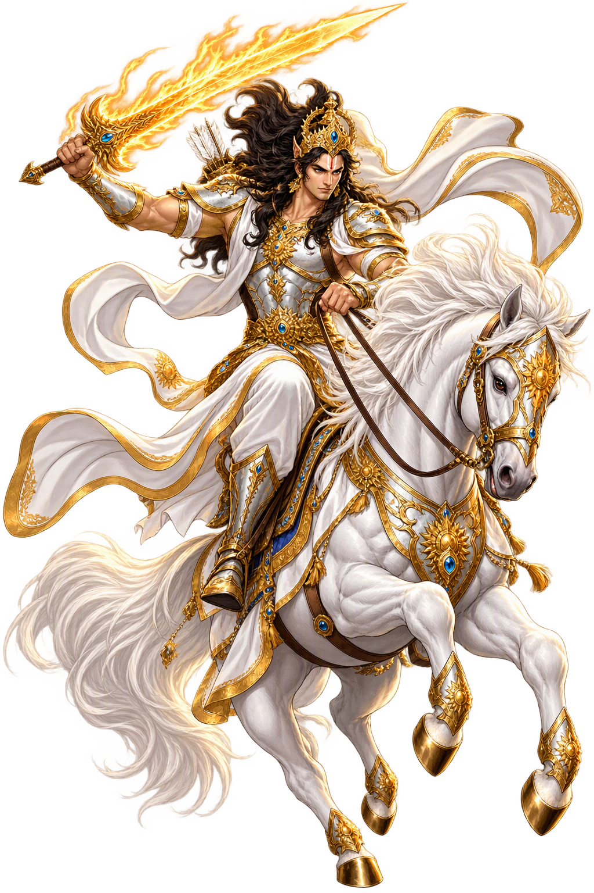

The Living Myth
Prophecy, Renewal, Avatar of Vishnu · The Tenth Avatāra, the End of the Kali Yuga · The avatāra yet to come — the tenth and final avatāra of Viṣṇu, who appears at the end of the Kali Yuga riding a white horse to destroy unrighteousness and restore the age of truth

Stories of Kalki
The Kalki myth is the Purāṇic eschaton: the prophecies of the Kali Yuga’s decay — merchants as kings, wealth as virtue, fathers feared by sons — are the diagnosis, and Kalki is the cure. He appears in the latest strata of the Mahābhārata and the Purāṇas as the tenth and final avatāra, the one Vishnu keeps in reserve for the world’s last night.
The earliest Kalki-passage names the signs: when time decays, a being of immense power will be born to a family of Brahmins, swift as thought, his hand a sword, his steed white as milk, blazing like a comet. The passage is embedded in the epic’s cosmological books as Vishnu’s promise to the tormented earth.
The eponymous Purāṇa tells it whole: the child Kalki, mocked by the corrupt, learns the Vedas from Paraśurāma himself, marries the princess Padmāvatī by the sword-contest, and rides out against the mleccha kings. His campaigns purify the world; the wicked fall to his blade and the earth’s burden lifts at last.
The Purāṇic Kali-Yuga lists read like satire: rulers will be thieves, vows will be sold, the low will govern the high. Kalki is the answer to this audit — not a reformer but an ending. The theology is cyclical: he destroys the age as a farmer burns the stubble, so the next golden age can be sown.
Kalki remains expected: in Śambhala-legend — Tibetan Buddhism adopted the hidden kingdom wholesale — and in popular Hinduism, where every generation finds the Kali Yuga’s signs fulfilled. He is the only god in this pantheon whose temple is the future, and whose devotees wait rather than celebrate.
The Rider Who Comes at the World’s End
Kalki is Vishnu’s final descent: the warrior on the white horse who will come when the Kali Yuga chokes on its own corruption — sword drawn, comet-marked, born in a village to a Brahmin named Viṣṇuyaśas — to end the age, punish the wicked, and restart the world’s golden wheel. He is the only deity in this pantheon whose myth is a prophecy.
Devadatta, the winged white steed, given by Śiva; Kalki rides from Śambhala at the age’s end.
Ratnamaru, the jewelled sword, given by the gods — it ends the Kali Yuga as a blade ends a lie.
His village, Śambhala, waits hidden; when dharma’s four legs shrink to one, he is born there.
After the sword, the restart: Kalki inaugurates the next Kṛta Yuga — death midwifing rebirth.
From the original script to the living URL
कल्कि
The name in its original Sanskrit form. Kalki (कल्कि) is attested in the source tradition — “The avatāra yet to come — the tenth and final avatāra of Viṣṇu, who appears at the end of the Kali Yuga riding a white horse to destroy unrighteousness and restore the age of truth”. Its original diacritics and script distinctions carry the full phonetic and orthographic weight of the source tradition.
kalki
The plain kalki form is identical to the Unicode restoration. Because this name is already written in Latin letters, no diacritics, stress, or script information were lost — only capitalization differs.
Kalki
The Unicode restoration does not need to recover lost marks for Kalki. Its value is canonical spelling and consistent cataloguing, not the reconstruction of erased orthography. The domain is readable as-is to both DNS and humanity.
Kalki.com
This restoration is written entirely in ASCII letters — no Punycode encoding stands between Kalki and the DNS. The domain reads identically to machines and to human eyes.
The attested spelling family of Kalki
Kalki
Restores कल्कि. The full Unicode restoration. kalki.com is not in the PuniCodex collection — it is watched for release; if it drops, this temple upgrades to an owned flagship. Attested by Mahabharata, Puranas, Bhagavata, MW.
How Kalki was spoken
How Kalki travels from ancient script to the modern URL
The lore you have read is the living myth. Extended Lore opens the scholarly vault beneath it: the cult and its material remains, a history of the image, the name after antiquity, a meditation on what the name still means, and the full scholarly apparatus — etymology, orthography, sources.
Enter Extended Lore